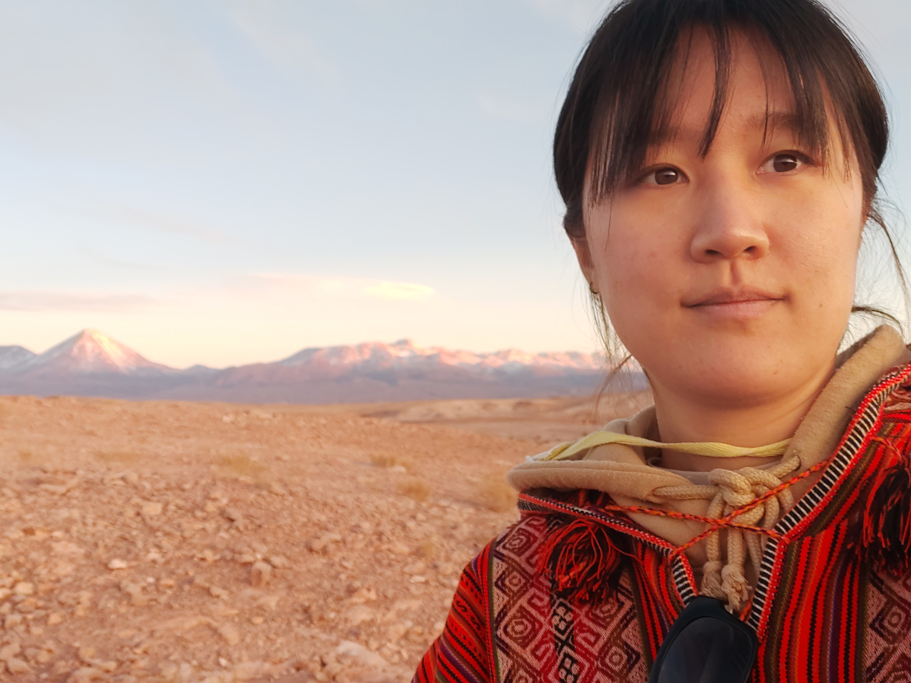

Hyowon Kim

-Graduate student in UST-KASI campus
-References
- Supervisor : Jongwan Ko [KASI,UST, Korea] jwko@kasi.re.kr
- Co-supervisor : Rory Smith [Universidad Technica Frederico de Santa Maria, Chile] rorysmith273@gmail.com
-Research Interest
- Formation and evolution of Brightest cluster galaxy
- Formation and evolution of the galaxy cluster
- Dynamical state of the galaxy cluster
- X-ray properties of galaxy cluster
- Effect from Large-scale structure as Environments of the galaxy cluster
- High-z evolution of BCG and Galaxy cluster (Thus, proto-cluster and LBGs)
- Obervational cosmology
Publications
-Paper:1st author
-Paper:Co-author
Experiences
-Observations
-Simulations
- Illustris-TNG, N-cluster run
Talks
-National
- spring 2019) Korea astronomical society meeting, Busan/ Oral talk
- Jan 2019) Galaxy formation workshop 2019, Yonsei University/ Oral talk
- Jan 2019) Infrared Medium-Deep Survey Workshop 2019, Seoul National University/ Oral talk
- fall 2018) Korea astronomical society meeting, ChungSong/ Poster
-International
- Aug 2022 ) IAUGA, Korea/ Poster
- May 2022 ) IV Workshop on Numerical and Theoretical Astrophysics, Chile/ Oral talk
- Feb 2022 ) 2021 Galaxy evolution workshop, Zoom/ Oral talk
Awards
-Fund
- 2022 1st semester - UST Overseas program : fund for Oversea training